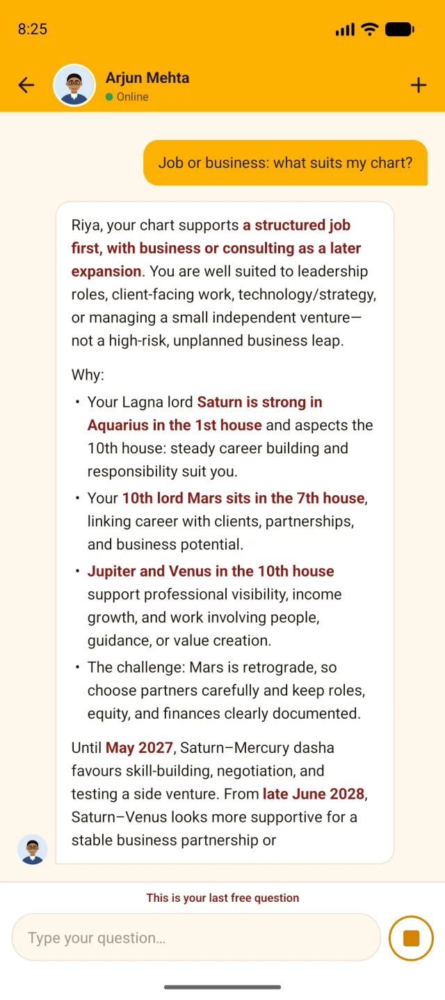
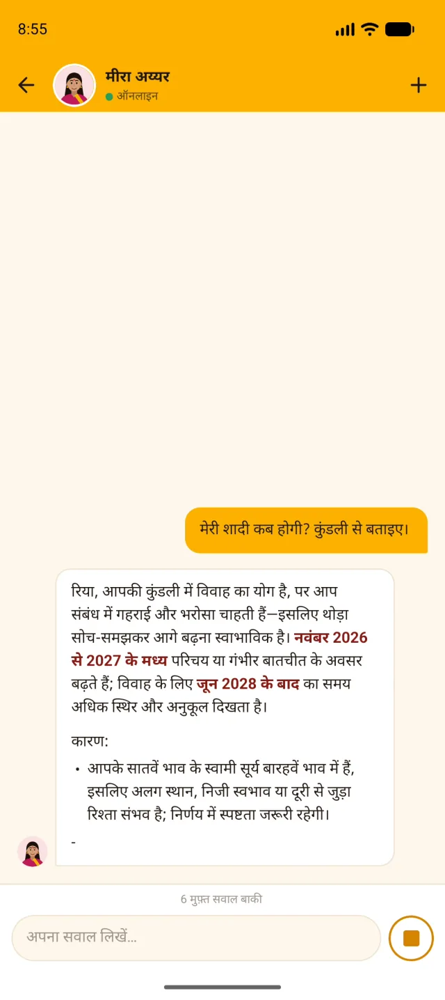

अपने शब्दों में पूछिए
जवाब, आपकी अपनी कुंडली से
शादी, करियर, पैसा, परिवार या विदेश — हिंदी, अंग्रेज़ी या हिंग्लिश में पूछिए। जवाब उसी भाषा में आता है जिसमें आपने लिखा।
- जाँचने लायक कारण: किस दशा, किन भावों और किन ग्रहों से जवाब आया।
- समय महीनों में, कभी कोई मनगढ़ंत पक्की तारीख़ नहीं।
- अंत में एक साफ़ अगला कदम, जो एक टैप में रिमाइंडर या लक्ष्य बन जाता है।
- आपके ज्योतिषी आपके बताए पल और लक्ष्य याद रखते हैं।
मेरी शादी कब होगी?
क्या मैं मांगलिक हूँ? क्या चिंता की बात है?
मेरा वैवाहिक जीवन कैसा रहेगा?
Job or business: what suits my chart?

